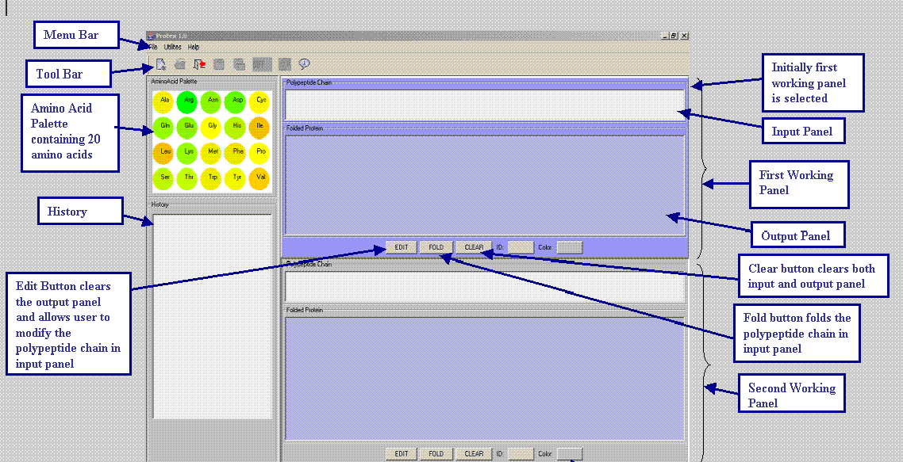
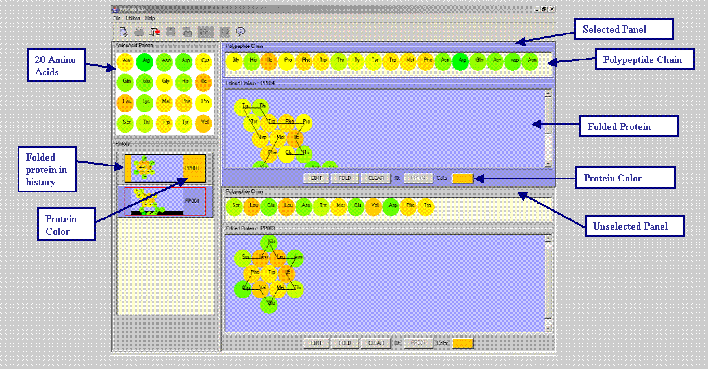

Protein Exploration Lab
The
Goals and Objectives of the Lab
- To work with a computer
simulation of protein folding.
- To visualize the unique structure of a protein and its post
translational modifications.
Background
In 1962 Max F. Perutz won the Nobel
Prize in Chemistry for deducing the structure of hemoglobin from data
collected with x-ray crystallography. Today virtual laboratories use
supercomputers and computer grids to solve protein structure problems
by working from first chemical principles. There are nice discussions
at Stanford's folding@home page and at the Blueprint project's protein
folding page. Each of these sites offers you the chance to enlist your
own home computer in the protein folding task. (For example, see http://www.technologyreview.com/articles/waldrop0502.asp
.)
Protex will mainly be used to
teach
the beginning biology students that changing a single amino acid in a
protein can dramatically alter its shape and therefore its biological
function.
An amino acid is modeled as a disk (or sphere). An index value
assigned to each amino acid indicates its hydrophobicity, that is, how
much the amino acid repels (or attracts) the water molecules that make
up its environment. Imagine that a chain of amino acid disks occupies a
sequence of cells making up a regular tessellation of a plane. The
chain folds so that each cell in the sequence shares an edge (or face)
with the next cell, and minimizes the total energy, i.e., the total
number of edges (or faces) of occupied cells exposed to the environment
(unoccupied cells), weighted by the hydrophobic, hydrogen and ionic
indices of the amino acids occupying the cells.
Running Protex - Protein Exploration Lab
To run Protex simply double-click on the Protex jar file. When you
start Protex the display will be as shown in figure below.

- You can either drag amino acid or just single click it to add it
at the end of polypeptide chain in input panel.
- In order to delete an amino acid from polypeptide chain you just
need to single click it.

There are several useful buttons/labels on each Protex work panel:
- Edit - clears the folded protein in output panel and modify the
linear polypeptide chain in input panel.
- Fold – folds the polypeptide chain in input panel.
- Clear – clears both input panel and output panel.
How
to get details about Protex
To get more details about the Protex application you can select "About
Protex" from the "Help" menu or simply click on the "About Protex"
button. This action will produce another dialog box listing a URL.
How to see a folded protein from History
To see a folded protein from the History, select the panel in which you
want to see the protein. (Click anywhere on a panel to select it.) Double
click or right click on any thumbnail image in the History. After a short
pause, the folded protein from the History will appear in the selected
panel.